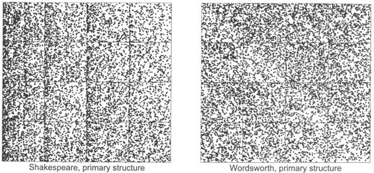

After converting the text into a sequence of 5 digit codes, Clark and Tran used the numerical coarse-graining method to drive the IFS.
Here are the results for all of Shakespeare's sonnets (left) and all of Wordsworth's sonnets (right).
|  |
There is little visible pattern, except possibly a slight decrease in density along the Wordsworth diagonal.
Most often, here the transformation associated with a word is determined by the alphabetic ordering of the first letter of the word.
This is why Clark and Tran called this the primary structure of the sonnets.
Return to IFS and the Sounds of Literature.